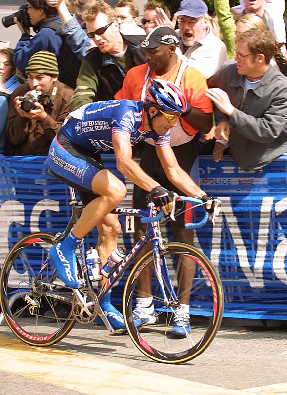
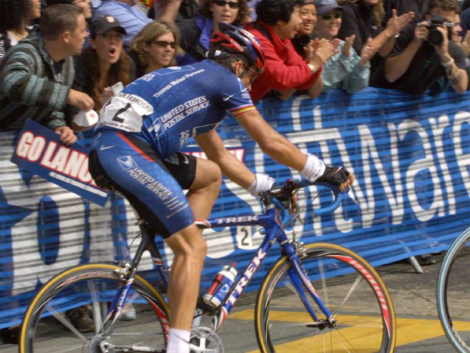
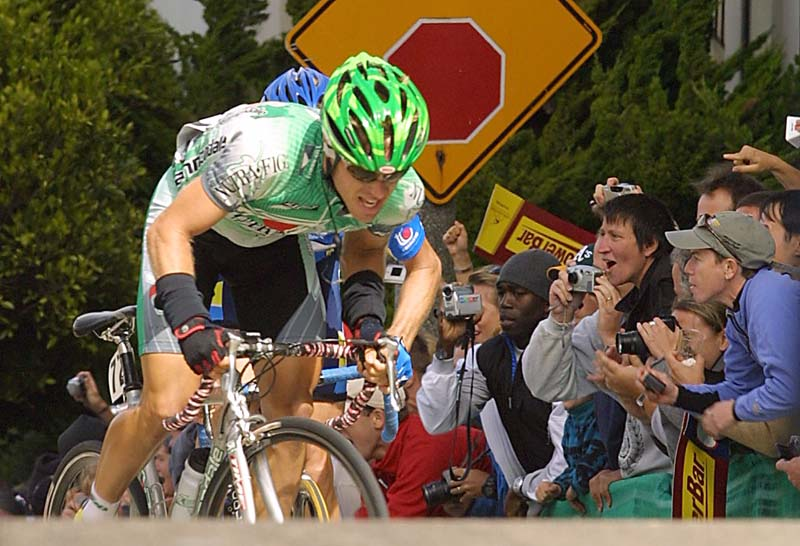
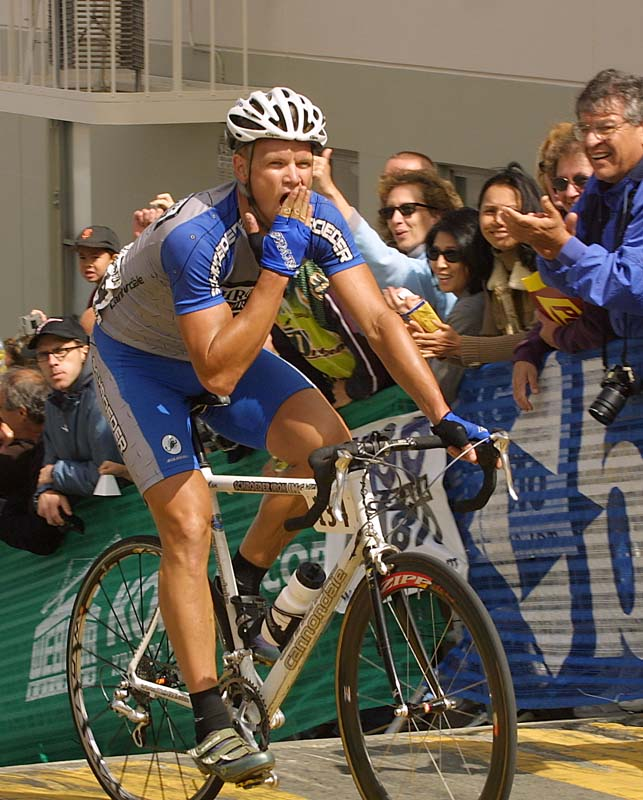

|

Winner of the innuagural SF Grand Prix in 2001, George Hincapie was a crowd favorite, especially after a late race move to catch the breakaway leaders. He finished 15th. You can clearly see some of the injuries he sustained a month ago on his left leg.  Lance Armstrong stayed strong all day, just missing out in the final sprint.  Eventual winner, Charles Dionne from Canada cresting Filmore St. Don't feel bad. To quote Armstrong, who finished in 6th place, "I never heard of him. I don't know anything about him." Even here, the crowd is watching Armstrong and Hincapie following Dionne up Filmore.  Some didn't find the hills that tough. |
Copyright © 2002 Thayer Syme